David Geiser
"Geiser searches to capture a rare truth and impart it in his art."
"The initial impression of David Geiser's paintings is their physical appearance,
the palpability of the work.
These pieces reveal their manual construction, the process
that brought them into being... they are tough,
unruly pieces, crafted by hand."


2017
|
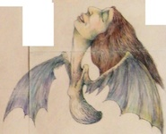 Soar 7’ x 6’ |
 BENT April 2017 White Room Gallery Bridgehampton NY |
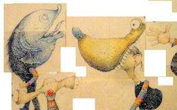 Doo Da Man Truckin' off to Da Da land with the Doo Da clan 6' x 8' |
{kind=link}
{kind=link}
2013-2016
|
Butters Gallery, June 2016 Butters Gallery Ltd. |
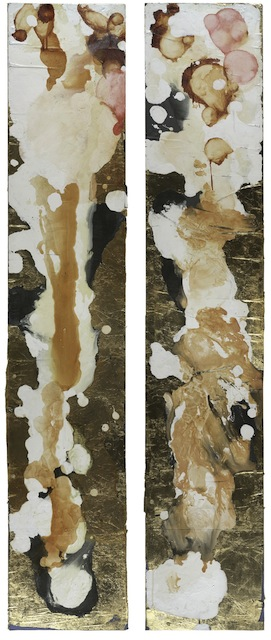 SALON January 2014 Butters Gallery Ltd. |
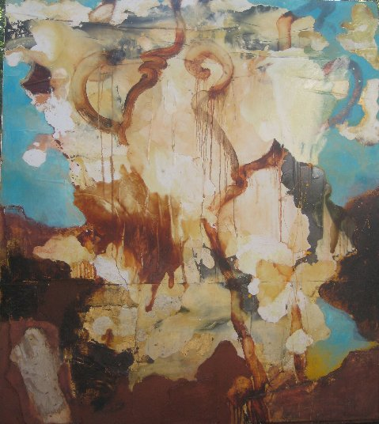 Paintings 2013-2014 |
 Clown Oracle 2013-2014 Drawings, illustrations, cards, paintings. |
2011-2013
|
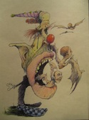 Geiser INK: Illustrations & Cards |
Positively Elemental October 2012 Artists Circle Fine Art Potomac MD |
Geiser's Inferno Dante's Inferno illustrated by Geiser |
 Butters Gallery Ltd, Spring 2012 |
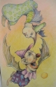 Illustrations Fall 2011 |
Illustrations Spring 2011 |
{kind=link}
2009-2010
 Winter Collection 2010-2011 |
 Walk Tall Gallery Oct 9th - Nov 8th 2010 |
Fall Paintings, 2010 |
 Nabi Gallery "Nocturnes" Feb 11-March 20 |
Sylvester & Co. Opening Reception August 8, 2009
Corporate Installations - 1300 17th Street Lobby, Aloft Hotel Lobby
Butters Gallery Ltd, New Paintings for 2009, June 04 - June 27, 2009
David Geiser at Ross and Guild Hall - March 2009
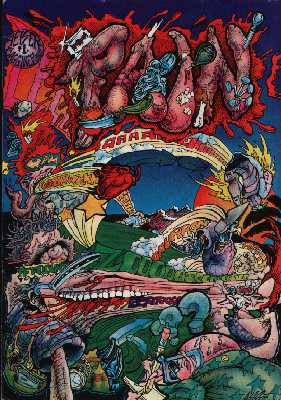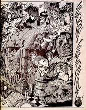 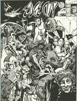
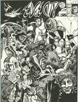
Underground Comics, 1972-1984
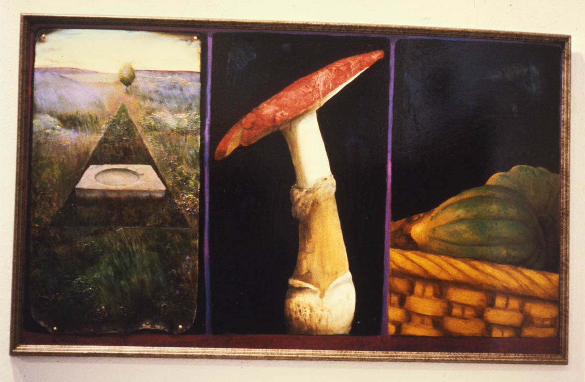
Early Paintings, 1970-1981